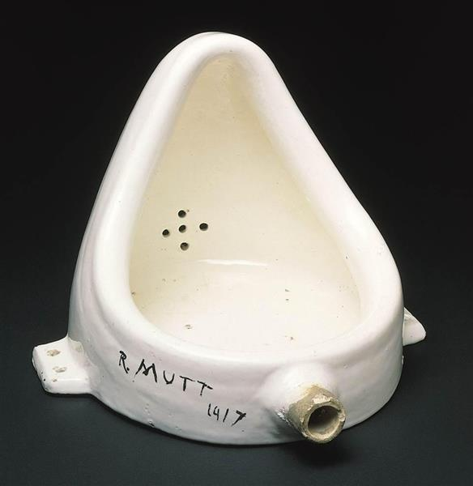
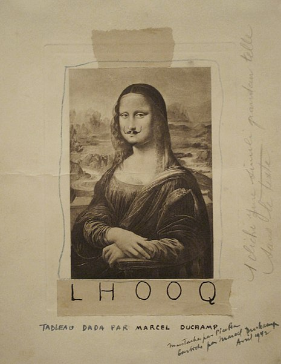

Marcel Duchamp was a pioneer of Dada, a movement that questioned long-held assumptions about what art should be, and how it should be made. In the years immediately preceding World War I, Duchamp found success as a painter in Paris. But he soon gave up painting almost entirely, explaining, "I was interested in ideas - not merely in visual products."
Seeking an alternative to representing objects in paint, Duchamp began presenting objects themselves as art. He selected mass-produced, commercially available, often utilitarian objects, designating them as art and giving them titles. "Readymades," as he called them, disrupted centuries of thinking about the artist's role as a skilled creator of original handmade objects. Instead, Duchamp argued, "An ordinary object [could be] elevated to the dignity of a work of art by the mere choice of an artist."